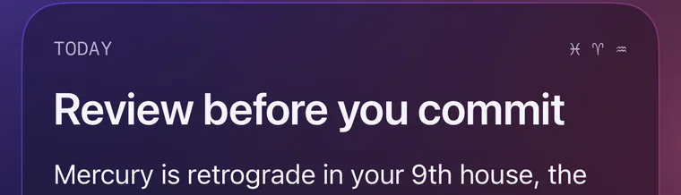
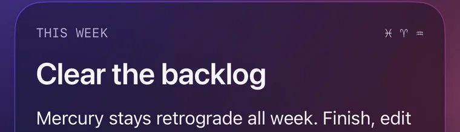
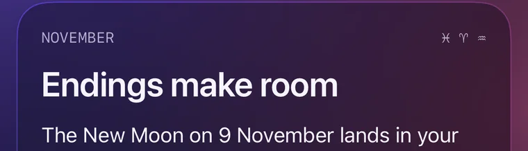
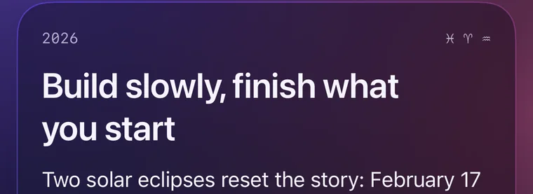
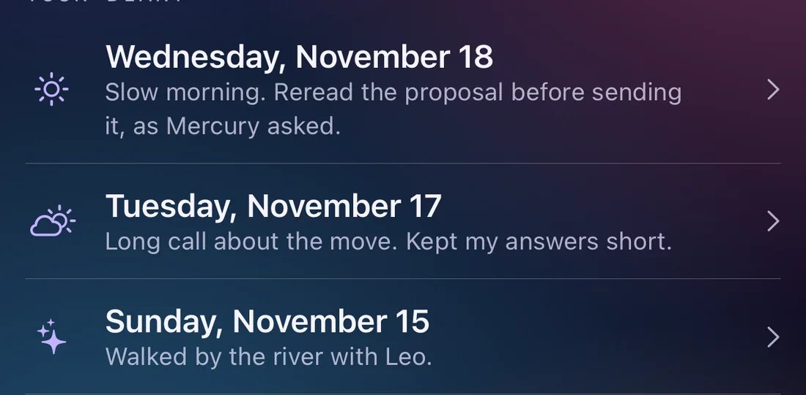

Today
A reading for the day, the sky around it, and what is worth a second look. Free.
Open it each morning and turn to the page you want. Today is free. The rest come with Pro.

A reading for the day, the sky around it, and what is worth a second look. Free.

What the week asks of you, and the moments in the sky that shape it.

The new moon, the full moon and the turning points between them, each tied to a house in your chart.

Eclipses, retrogrades and a note on every month, so the year has a shape before it starts.
Planet positions come from an astronomy engine, accurate to about one arcminute. Your rising sign comes from your birth time, your birthplace and that place's time zone.
Search any city or village, type coordinates, or put a pin on the map.
One arcminute is a sixtieth of a degree: the wheel is drawn where the sky really was.
Add your partner to see their chart, a short reading for the two of you today, and how your signs get along across four areas: talk, feeling, attraction and the long run.
One partner is included in Pro.
Pick a mood, write a line. Every day gets a page, and they all wait in a list you can look back through.
Your diary stays on your phone. It is never sent to us or to the AI.

Born within a day of a sign change? The app uses your birth time and place to be exact.
Pisces
Pisces dissolves boundaries. Intuitive, compassionate and artistic, it feels everything around it.
Wood Dog 狗
Loyal and fair, protective of your people. Wood adds growth and cooperation.
Astrology is not science, and we will not pretend it is. Zodiary is for reflection: a way to look at your day with a little more attention.
The part we can be exact about is the sky. Planet positions are calculated with Astronomy Engine, to about one arcminute, from the date, time and place you give.
The words are ours, and some are written by an AI model from your chart. We send it your birth data and your question, never your name or your diary.
Today is free. Pro opens the week, the month, the year, your partner, the planner, the diary and the astrologer. Questions are welcome at essentialdevteam@gmail.com.
Essential Dev Team
The people who make Zodiary
Zodiary is coming to the iPhone. Send us a note and we will write back on launch day.
Tell me at launch